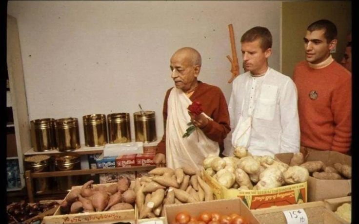

Srila Prabhupada About Health
Posted on : 28th September, 2024

My first concern is that you are not eating well. It is a case of anxiety. Please don't eat dal and spices. Simply boiled vegetables, rice and a few chapatis. Take butter separately and eat only as much as you may require for taste. Drink milk twice, morning and evening. Don't eat at night. Eat some fruits in the evening.
Use some digestive pill after each principle meal. I think soda-mint tablets will help. Be careful about your health first. This information is not only for you but all my noble sons.
I am an old man. I may live or die it does not matter. But you must live for long time to push on this Krishna Consciousness movement.
~ Srila Prabhupada Letter to December 21, 1967 My Dear Rayarama